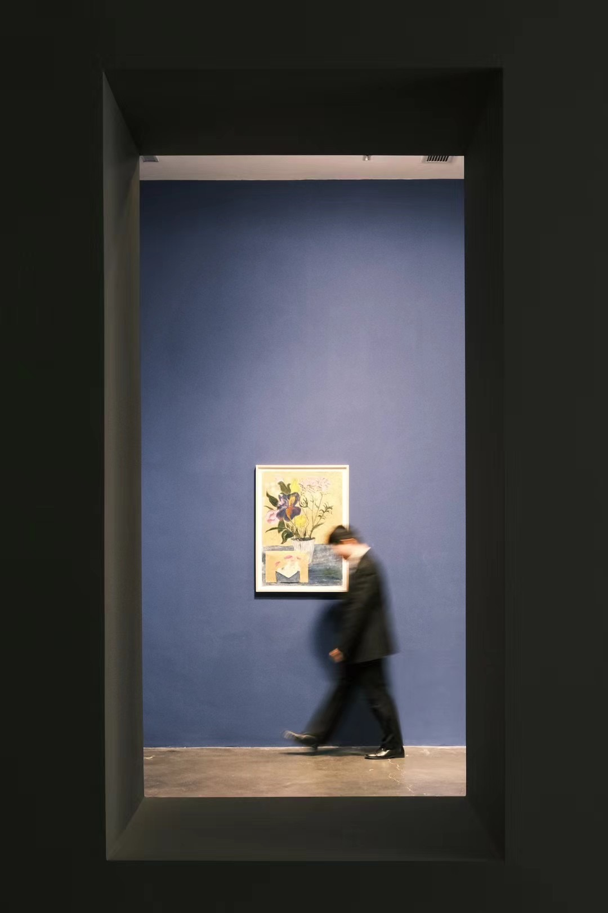
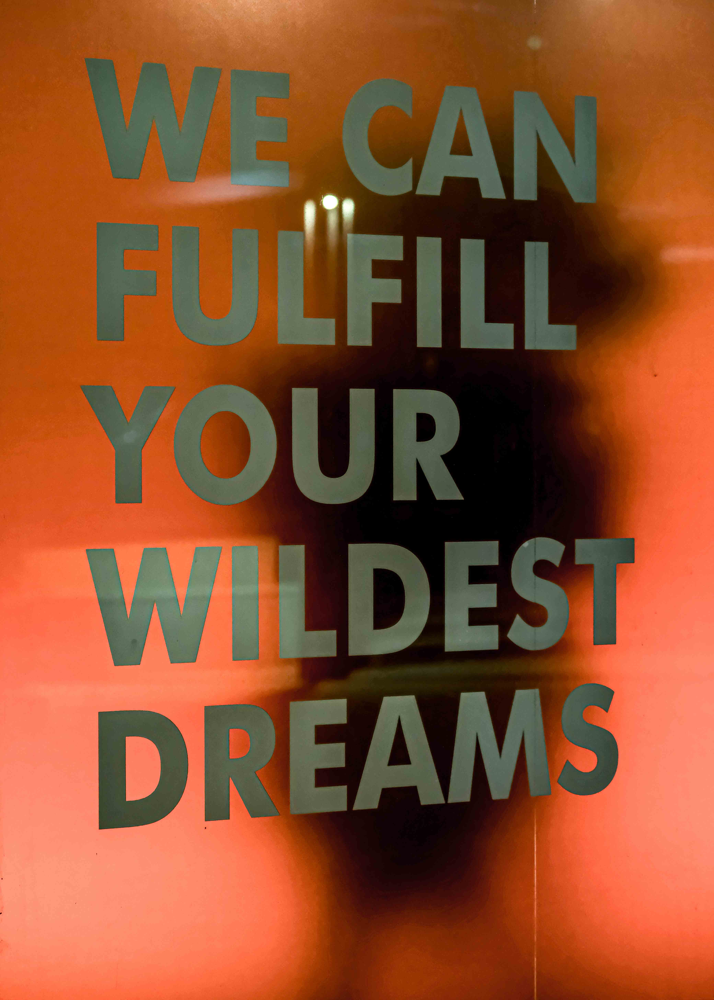

01
People’s Daily Online
Editorial posters shaped for international audiences.
Get to know me from now
My name is James.
But please don’t get to know me
through my history.
Get to know me
starting from now.
02 — Labels
They would all be true.
But they would also make it too easy to decide who I am before getting to know me.
03 — My names
Every name belongs to a different place, relationship, and version of me.
They are all me.
But none is the whole of me.
04 — Begin again
But it does not have to decide
what comes next.
Sometimes, the widest dream I can have is to stop holding too tightly to a single identity.
To clear the ground.To begin again.
05 — A new language
Not Cantonese, Mandarin,
English, or German.
The language of
I am learning that an idea can be beautiful—and still need to prove that it works.
So I look again, question again,
and begin again.

06 — Keep moving
Keep moving.
Keep my feet on ground
that feels like my own.
And keep trying to make something different—
then something even more different.
07 — From now
It is an invitation
to see who I may become.
Thank you for meeting me again.
And thank you to myself—for the courage to restart and the curiosity to keep exploring.
My name is James.
Please get to know me
starting from now.
P.S. If you still want the traditional version, I may have to ask a terrible question and earn myself another five minutes.
After the introduction
The work is not the whole story. It is simply a trace of where I have looked, what I have noticed, and what I have tried to make visible.
01
Editorial posters shaped for international audiences.
02
Stories shaped through rhythm, sequence, sound, and the decision of where to let an image breathe.

03
Places, movement, quiet details—and the patience to look again.
View all 12 photographs